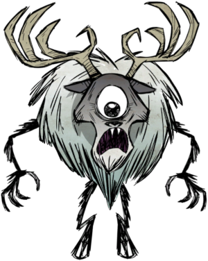
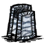

Deerclops

Deerclops is the first station boss who apears in winter between day 30 and 31(for his first apperance) he has 4000hp  , deals 75 damage
, deals 75 damage  for players and 150 damage
for players and 150 damage  for mobs, he also has a -400 sanity
for mobs, he also has a -400 sanity  loss while in combat
loss while in combat
Kiting pattern(for every atack)
Phase 1:
Atack 1: bait, 4 atacks, back, 4 atacks
Safe kiting pattern
Phase 1:
Atack 1: bait, 3 atacks, back, 3 atacks
Full gameplay loop
Explanation
Since deerclops only have 1 atack you can do the same kiting pattern the whole fight and win
Tanking Strategy
Itens required
1x 
Full Gameplay loop
Explanation
If playing as Wilson with full health  and full sanity
and full sanity  , the player can tank all deerclops atacks and survive with very few itens, just equip the required itens and press "f" then you will be the winner
, the player can tank all deerclops atacks and survive with very few itens, just equip the required itens and press "f" then you will be the winner